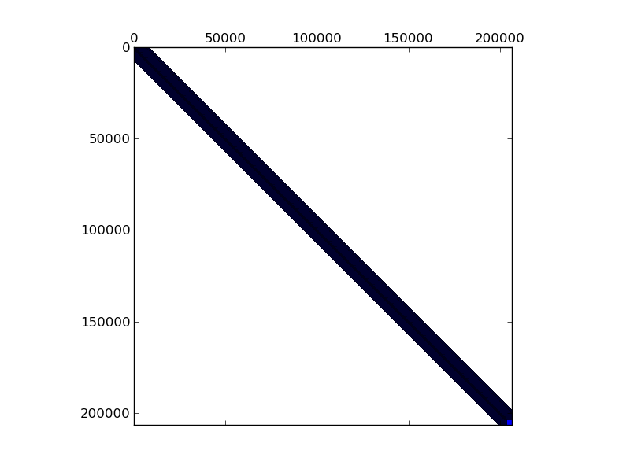

Matrix: mac_econ_fwd500

Program arguments: ../build/test_spmv_sim ../fpga16-benchmark/fpga16/mac_econ_fwd500.mtx File: ../fpga16-benchmark/fpga16/mac_econ_fwd500.mtx Sorting took: took 0.0997043 seconds. Param MatrixPath ../fpga16-benchmark/fpga16/mac_econ_fwd500.mtx 206500 3584 206500 2048 206500 171008 206500 116224 206500 47104 206500 10240 206500 8192 206500 206848 206500 49152 206500 3584 206500 83456 206500 14848 Running on DFE Result Simple Total cycles=3239663, Result Simple Padding cycles=44, Result Simple Reduction cycles=2891000, Config ArchitectureId 7 Result Simple Input width =8, Result Simple Pipes =1, Result Simple Iterations=1, Result Simple Took (ms)=70.7785, Result Simple Est (ms)=0.0323966, Result Simple Gflops (est)=0.0786124, Result Simple Gflops (actual)=3.59823e-05, Result Simple BWidth (est)=8.9407, Test passed! All tests passed!
Name, Order, Nonzeros, Unique Values, Sparsity, MC(2), MC(5), MC(8), MC(10) mac_econ_fwd500 206502 1273389 118306 0.00299 0.24322 0.29903 0.39364 0.65179 0.91353